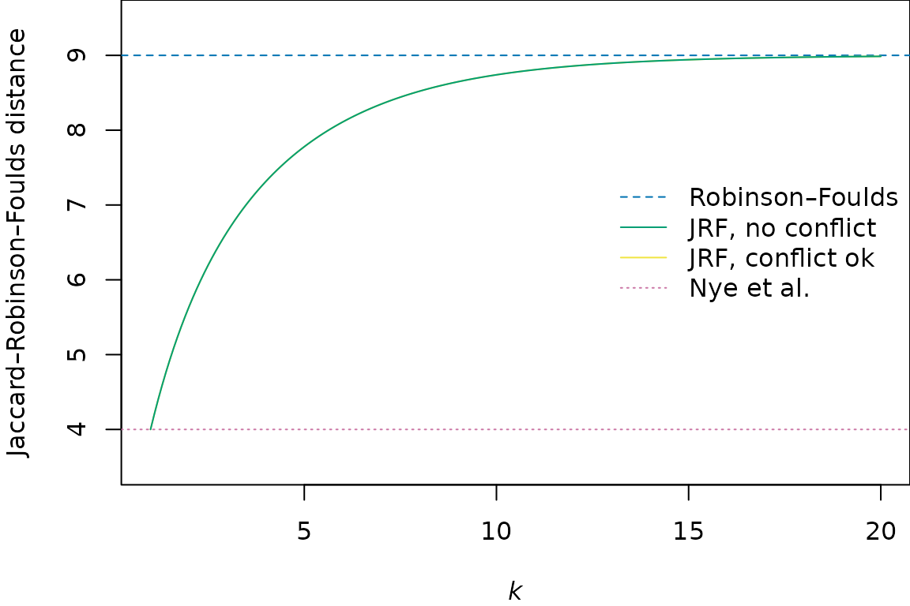

Generalized Robinson-Foulds distances
Martin R. Smith
Source:vignettes/Generalized-RF.Rmd
Generalized-RF.RmdThis document outlines the similarity measures employed by the generalized Robinson–Foulds distances implemented in this package.
Generalized RF distances are introduced elsewhere; before you read further, you may also wish to revisit how to use the ‘TreeDist’ package, and relevant principles of information theory.
Shared phylogenetic information
Under the shared phylogenetic information tree distance measure (Smith, 2020), pairs of splits are assigned a similarity score that corresponds to the amount of phylogenetic information (sensu Steel & Penny, 2006) that they share in common (see separate vignette), a concept introduced (though not developed) by Nelson (1979).
VisualizeMatching(SharedPhylogeneticInfo, tree1, tree2,
Plot = TreeDistPlot, matchZeros = FALSE)
SharedPhylogeneticInfo(tree1, tree2)## [1] 12.32188Conflicting splits can nevertheless be instructive
Shared phylogenetic information assigns zero similarity to incompatible splits, i.e. those that cannot both occur on a single tree. This leads to problematic behaviour in certain cases: for example, swapping the position of two distant leaves (as with leaves ‘A’ and ‘J’ below) can disproportionately reduce similarity – in this example, to zero.
VisualizeMatching(SharedPhylogeneticInfo, AtoJ, swapAJ,
Plot = TreeDistPlot, matchZeros = FALSE, prune = c(5, 18))Mutual clustering information
Scoring each pair of splits according to their mutual clustering information (Smith, 2020) (see separate vignette) results in a information-based tree distance metric that recognizes similarity in tree structure even when every possible pairing of splits conflicts:
VisualizeMatching(MutualClusteringInfo, AtoJ, swapAJ,
Plot = TreeDistPlot, matchZeros = FALSE, prune = c(5, 18))
MutualClusteringInfo(AtoJ, swapAJ)## [1] 1.348339Because no pair of non-trivial splits has zero mutual clustering information, even a dissimilar pairing (such as HI|ABCDEFG ⇒ EI|ABCDFGH below) is (slightly) preferable to leaving a split unpaired.
VisualizeMatching(MutualClusteringInfo, tree1, tree2,
Plot = TreeDistPlot, matchZeros = FALSE)
Nye et al. tree similarity metric
The Nye et al. (2006) tree similarity metric scores pairs by considering the elements held in common between subsets of each split.
Consider a pair of splits ABCDEF|GHIJ and ABCDEIJ|FGH. These can be aligned thus:
ABCDEF | GHIJ
ABCDE IJ|FGHThe first pair of subsets, ABCDEF and ABCDEIJ, have five elements in common (ABCDE), and together encompass eight elements (ABCDEFIJ). Their subset score is thus \(\frac{5}{8}\).
The second pair of subsets, GHIJ and FGH, have two elements (GH) in common, of the five total (FGHIJ), and hence receive a subset score of \(\frac{2}{5}\).
This split alignment then receives an alignment score corresponding to the lower of the two subset scores, \(\frac{2}{5}\).
We must now consider the other alignment of this pair of splits,
ABCDEF | GHIJ
FGH|ABCDE IJThis yields subset scores of \(\frac{1}{8}\) and \(\frac{2}{9}\), and thus has an alignment score of \(\frac{1}{8}\). This alignment gives a lower score than the other, so is disregarded. The pair of splits is allocated a similarity score corresponding to the better alignment: \(\frac{2}{5}\).
As such, splits that match exactly will receive a similarity score of 1, in a manner analogous to the Robinson–Foulds distance. (This is despite the fact that some splits are more likely to match than others.) It is not possible for a pair of splits to receive a zero similarity score.
VisualizeMatching(NyeSimilarity, tree1, tree2,
Plot = TreeDistPlot, matchZeros = FALSE)
NyeSimilarity(tree1, tree2, normalize = FALSE)## [1] 3.5Jaccard–Robinson–Foulds metric
Böcker et al. (2013) employ the same split similarity calculation as Nye et al. (above), which they suggest ought to be raised to an arbitrary exponent in order to down-weight the contribution of paired splits that are not identical. In order for the metric to converge to the Robinson–Foulds metric as the exponent grows towards infinity, the resulting score is then doubled.
JaccardRobinsonFoulds(tree1, tree2, k = 1)## [1] 4
VisualizeMatching(JaccardRobinsonFoulds, tree1, tree2,
Plot = TreeDistPlot, matchZeros = FALSE)
JRF2 <- function (...) JaccardRobinsonFoulds(k = 2, ...)
JRF2(tree1, tree2)## [1] 5.638889
VisualizeMatching(JRF2, tree1, tree2,
Plot = TreeDistPlot, matchZeros = FALSE)
The figure below shows how the JRF distance between the two trees plotted above varies with the value of the exponent k, relative to the Nye et al. and Robinson–Foulds distances between the trees:

The theoretical and practical performance of the JRF metric, and its speed of calculation, are best at lower values of k (Smith, 2020), raising the question of whether an exponent is useful.
Böcker et al. (2013) suggest that ‘reasonable’ matchings exhibit a property they term arboreality. Their definition of an arboreal matching supposes that trees are rooted, in which case each split corresponds to a clade. In an arboreal matching on a rooted tree, no pairing of splits conflicts with any other pairing of splits. Consider the case where splits ‘A’ and ‘B’ in tree 1 are paired respectively with splits ‘C’ and ‘D’ in tree 2. If ‘A’ is paired with ‘C’ and ‘B’ with ‘D’, then to avoid conflict:
if A is nested within B, then C must be nested within D
if B is nested within A, then D must be nested within C
if A and B do not overlap, then C and D must not overlap.
Equivalent statements for unrooted trees are a little harder to express.
Unfortunately, constructing arboreal matchings is NP-complete, making an optimal arboreal matching slow to find. A faster alternative is to prohibit pairings of contradictory splits, though distances generated under such an approach are theoretically less coherent and practically no more effective than those calculated when contradictory splits may be paired, so the only advantage of this approach is a slight increase in calculation speed (Smith, 2020).
Matching Split Distance
Bogdanowicz & Giaro (2012) propose an alternative distance, which they term the Matching Split Distance. (This approach was independently proposed by Lin et al. (2012).)
MatchingSplitDistance(tree1, tree2)## [1] 5
VisualizeMatching(MatchingSplitDistance, tree1, tree2,
Plot = TreeDistPlot, matchZeros = FALSE)
Note that the visualization shows the difference, rather than the similarity, between splits.
Similar to the Nye et al. similarity metric, this method compares the subsets implied by a pair of splits. Here, the relevant quantity is the number of elements that must be moved from one subset to another in order to make the two splits identical. With the pair of splits
ABCDEF | GHIJ
ABCDE IJ|FGHthree leaves (‘F’, ‘I’ and ‘J’) must be moved before the splits are identical; as such, the pair of splits are assigned a difference score of three.
Formally, where \(S_i\) splits \(n\) leaves into bipartitions \(A_i\) and \(B_i\), the difference score is calculated by
\(n - m\)
where \(m\) counts the number of leaves that already match, and is defined as
\(m = \max\{|A_1 \cap A_2| + |B_1 \cap B_2|, |A_1 \cap B_2| + |B_1 \cap A_2|\}\)
MatchingSplitDistance(read.tree(text='((a, b, c, d, e, f), (g, h, i, j));'),
read.tree(text='((a, b, c, d, e, i, j), (g, h, f));'))## [1] 3This distance is difficult to normalize, as it is not easy to calculate its maximum value.
Information theoretic alternative
In the matching split distance, \(m\) represents a simple count of the number of shared taxa. An alternative is to measure the phylogenetic information content of the largest split consistent with \(S_1\) and \(S_2\):
\(m = \max\{h(A_1 \cap A_2 | B_1 \cap B_2), h(A_1 \cap B_2 | B_1 \cap A_2)\}\)
The most information-rich split consistent with
ABCDEF | GHIJ
ABCDE IJ|FGH is ABCDE | GH, which contains
TreeTools::SplitInformation(5, 2)## [1] 3.169925bits of phylogenetic information. This value can be used as a similarity score for this pairing of splits.
MatchingSplitInfoDistance(tree1, tree2)## [1] 17.27586
VisualizeMatching(MatchingSplitInfoDistance, tree1, tree2,
Plot = TreeDistPlot, matchZeros = FALSE)
References
Bogdanowicz, D., & Giaro, K. (2012). Matching split distance for unrooted binary phylogenetic trees. IEEE/ACM Transactions on Computational Biology and Bioinformatics, 9(1), 150–160. doi:10.1109/TCBB.2011.48
Böcker, S., Canzar, S., & Klau, G. W. (2013). The generalized Robinson-Foulds metric. In A. Darling & J. Stoye (Eds.), Algorithms in Bioinformatics. WABI 2013. Lecture Notes in Computer Science, vol 8126 (pp. 156–169). Berlin, Heidelberg: Springer. doi:10.1007/978-3-642-40453-5_13
Lin, Y., Rajan, V., & Moret, B. M. E. (2012). A metric for phylogenetic trees based on matching. IEEE/ACM Transactions on Computational Biology and Bioinformatics, 4(9), 1014–1022. doi:10.1109/TCBB.2011.157
Nelson, G. (1979). Cladistic analysis and synthesis: Principles and definitions, with a historical note on Adanson’s Familles des Plantes (1763–1764). Systematic Biology, 28(1), 1–21. doi:10.1093/sysbio/28.1.1
Nye, T. M. W., Liò, P., & Gilks, W. R. (2006). A novel algorithm and web-based tool for comparing two alternative phylogenetic trees. Bioinformatics, 22(1), 117–119. doi:10.1093/bioinformatics/bti720
Smith, M. R. (2020). Information theoretic Generalized Robinson-Foulds metrics for comparing phylogenetic trees. Bioinformatics, 36(20), 5007–5013. doi:10.1093/bioinformatics/btaa614
Steel, M. A., & Penny, D. (2006). Maximum parsimony and the phylogenetic information in multistate characters. In V. A. Albert (Ed.), Parsimony, phylogeny, and genomics (pp. 163–178). Oxford: Oxford University Press.